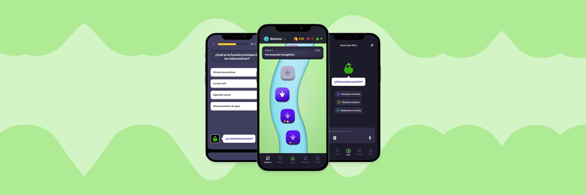
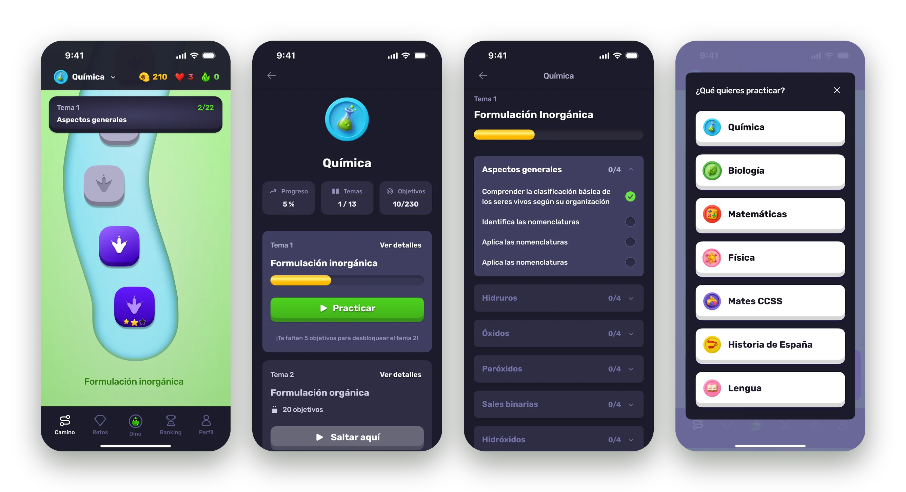

Designing, launching and evaluating an MVP
The challenge
Ucademy wanted to open a new line of business: a gamified mobile app for short study sessions before the university entrance exam. We launched it as an MVP to find product-market fit: could students build a study habit on their own?
What I did
I interviewed 6 students and 4 teachers, turned their five pain points into the principles of the MVP, designed the whole app and tracked its metrics after launch.
The outcome
1,000 downloads and 40% activation, above the 25% goal. Retention stayed low, so I recommended going back to product-market fit before redesigning more.
Decisions

Impact
Students found Dino easy to use and activated above target. After almost three months, we saw that building a study habit would need more time and resources. We decided to put them into Ucademy’s mature verticals, which already brought in revenue.
downloads, the MVP goal
completed onboarding
activation: first practice completed (target: 25%)
completed their first practice after we moved it into onboarding
Learnings
One store first
Launching on both stores split a small team. I’d start on iOS, where users were most likely to pay.
Fewer features first
We launched with many features at once, and most of the extras went unused. Next time I’d launch a few complete features and add more only when the data backs them.
Without a habit, there’s nothing to monetize
The paywall arrived before students had any recurrence, so it only measured friction. I’d test willingness to pay once students come back on their own.